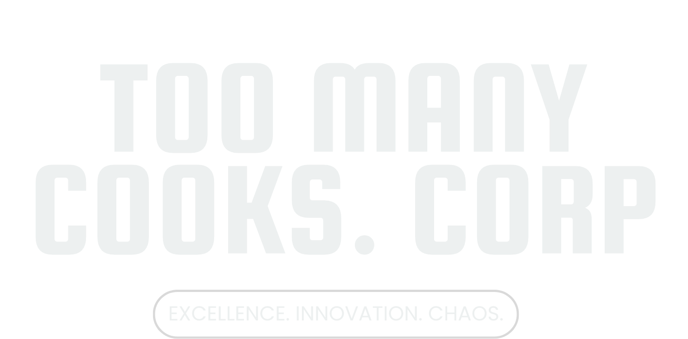
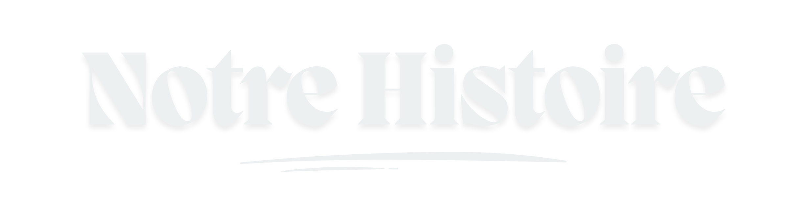
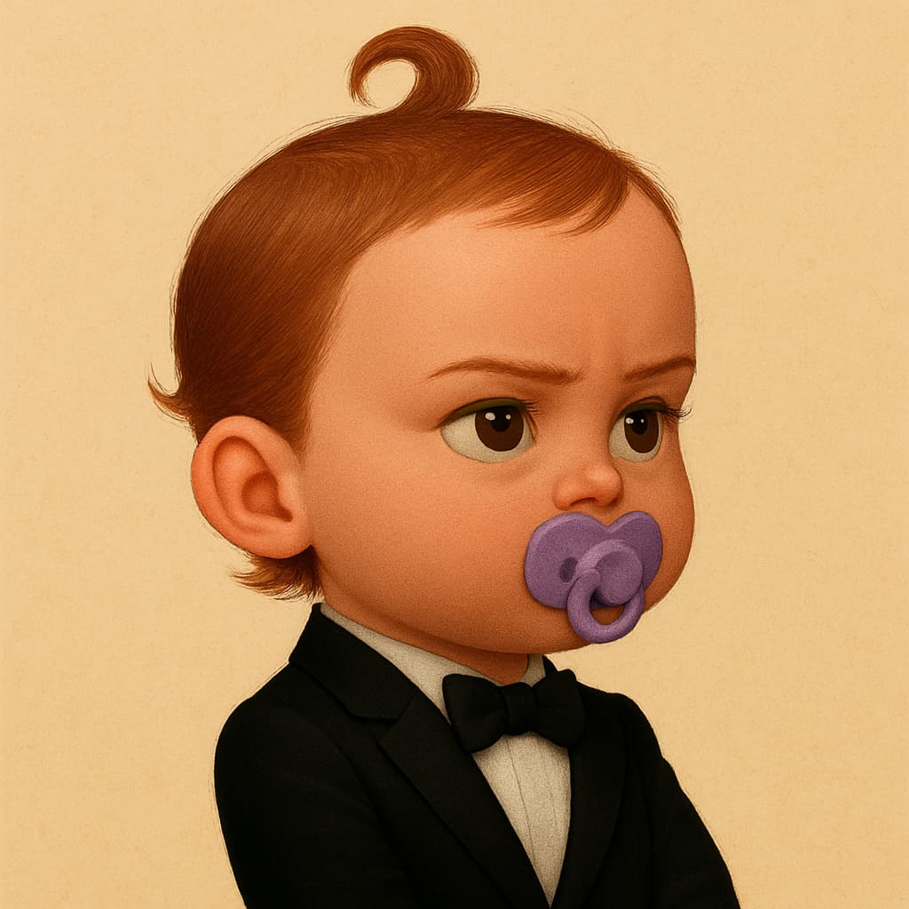
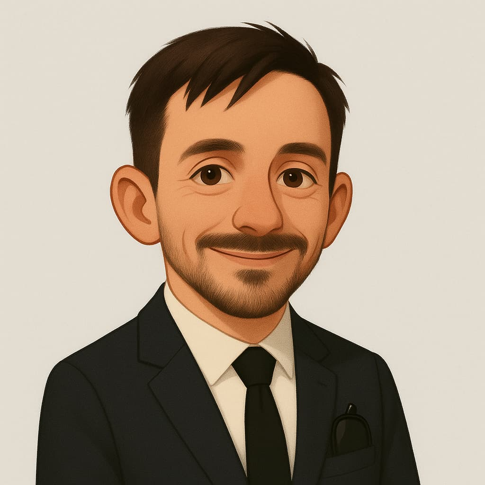
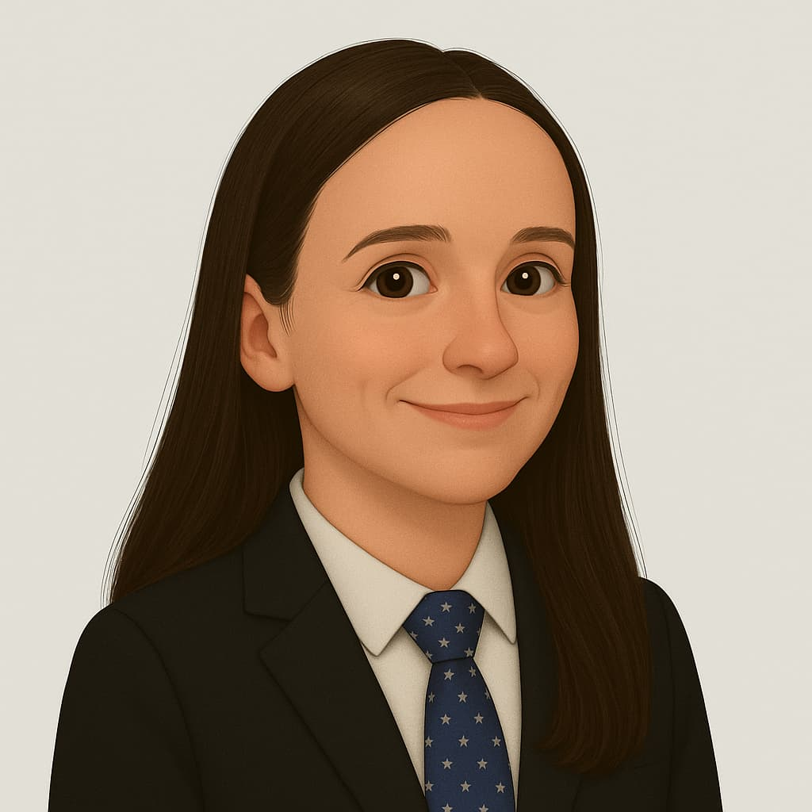
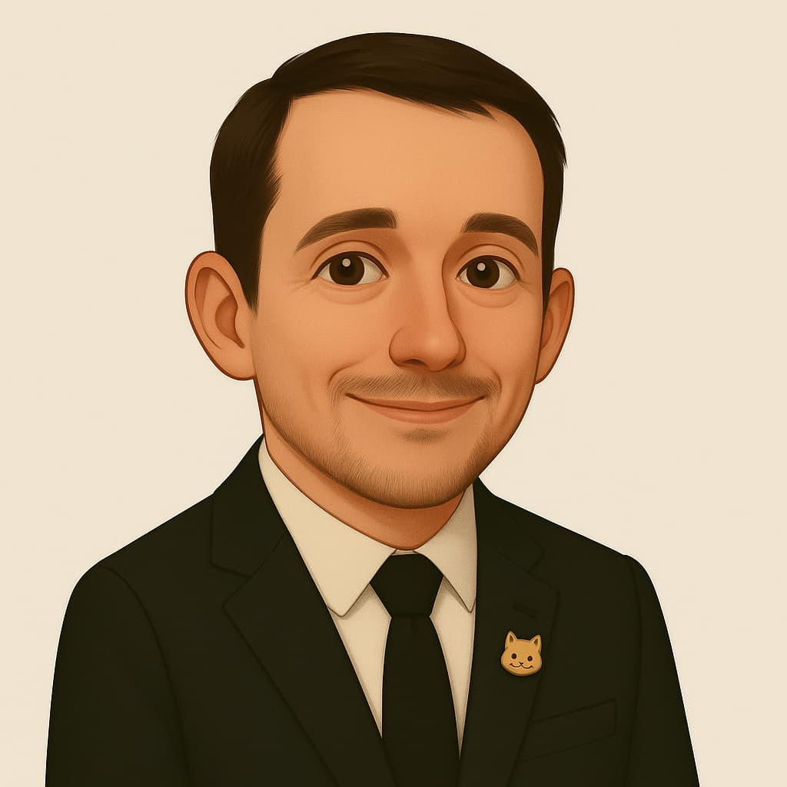
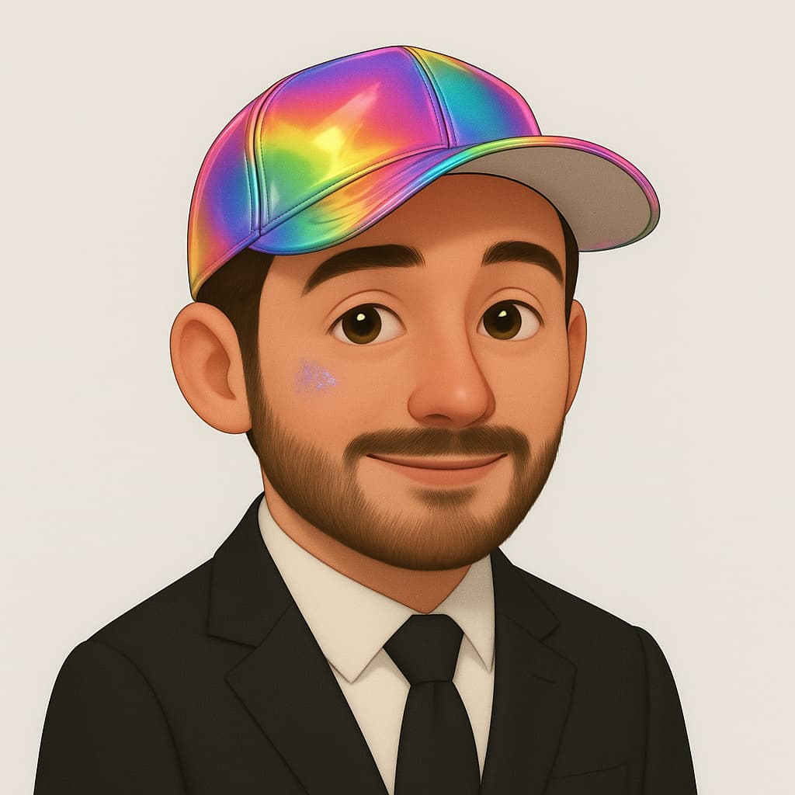

Too Many Cooks. Corporation — Pionniers du non-sens (depuis 2020)

Introduction
Bienvenue chez TMC Corp. — là où l’improbable prend forme.
Nous imaginons et orchestrons des week-ends immersifs où activités réelles, fiction absurde et révélations scénarisées s’entremêlent dans un chaos parfaitement organisé.
Nos créations
Chaque année, la Corp. développe un nouvel univers mêlant narration, supports physiques et expériences numériques pour mettre en scène et révéler le programme d’un week-end réel.
Sélectionnez l’un des projets ci-dessous pour découvrir les univers, supports et opérations déjà conçus par nos services.
{kind=link}
Notre histoire

Depuis 2020, une simple idée entre proches est devenue un univers mêlant week-ends réels, sites web, affiches, objets, énigmes et filiales parfaitement fictives. Voici les principales étapes de cette évolution, telles que reconstituées et partiellement approuvées par nos services internes.
🌱2020 – Origine
Un premier week-end réunissant activités, escape game et expérience immersive suffit à créer une tradition. Le nom Too Many Cooks apparaît ; aucune stratégie de développement mondiale n’est encore déclarée.
😷2021 – Pause forcée
Une année marquée par le Covid interrompt les opérations physiques. La future multinationale survit grâce aux apéritifs en visioconférence et à une stratégie de développement encore largement imaginaire.
📈2022/2023 – Expansion
Les opérations reprennent et le projet se structure. En 2023, le programme devient un menu gastronomique burlesque : le Weekend Bucolique et ses révélations scénarisées prennent forme, posant les bases d’une croissance démesurée.
🎬2024 – Too Many Cooks. Studios
Too Many Cooks. Studios Too Many Cooks. Studios transforme l’organisation du week-end en une fausse production cinématographique : site web, affiches, campagnes fictives et menu 2.0 à débloquer — le tout sans produire le moindre film. Too Many Cooks. Corporation est également officiellement créée, sans autorisation préalable.
🧘2025 – Too Many Cooks. Institute
Too Many Cooks. Institute présente son nouveau week-end comme un séjour bien-être fictif où chaque soin est conçu pour relaxer… ou déstabiliser. Un site de spa, une carte de soins, des colis, une mallette à énigmes, une VHS et des interactions automatisées prolongent l’expérience plusieurs semaines avant le avant le jour J.
✈️2026 – Too Many Cooks. Travel
Alors qu’un nouveau projet international reste classé confidentiel, Too Many Cooks. Travel inaugure de nouveaux formats courts et développe les Opérations Spéciales avec d’autres groupes. La diversification est officiellement lancée sous la formule "Weekend Buc. & Incr.", malgré l’absence d’étude de marché.
🚀2050 – Conquête de l’univers
Selon les plans de notre CEO Mimi, TMC Corp. s’étendra au-delà des frontières terrestres. Objectif : devenir la première multinationale intergalactique du divertissement et du bien-être.
Direction
Les figures historiques de Too Many Cooks forment le noyau de la Corporation et composent une direction aussi officielle que discutable.
Leurs fonctions ont été attribuées selon des procédures internes que personne n’a souhaité auditer.

Founder and Chief Executive Officer

Chief Product and Innovation Officer

Chief People and Happiness Officer

Chief Financial and Control Officer

Chief Information and Security Officer
Infos et contact
Derrière la Corporation se trouve un projet créatif imaginé et orchestré par Thibault, avec la complicité de ses proches.
Chaque édition réunit conception du programme, coordination logistique, écriture, direction artistique, création web, teasing, supports imprimés, objets narratifs et mise en scène.
L’objectif : transformer la préparation, la révélation et les souvenirs d’un simple week-end en une expérience cohérente.
Le projet est ouvert aux particuliers, aux collaborations professionnelles et aux partenariats, sous réserve d’acceptation du dossier par nos services compétents.
{kind=link}
{kind=link}
Expérience garantie inoubliable, voire traumatisante.
Le suivi post-traumatique reste à votre charge.